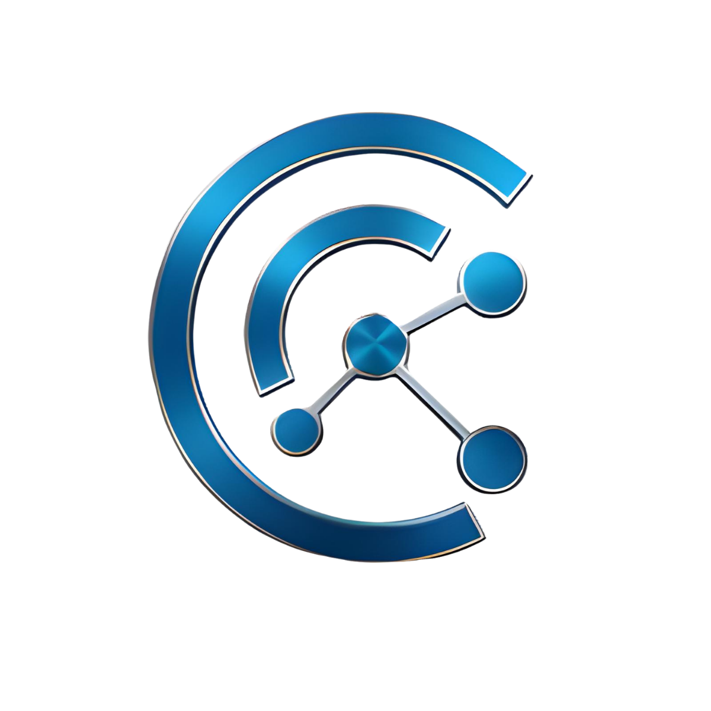

{{ c.format }}
{{ c.scoreLabel }}
{{ c.title }}
{{ c.author }}
Legen Sie ein Manuskript ab, um die automatische Aufbereitung zu starten, oder setzen Sie den Formatfilter zurück.
Erkannt: 1.840 Wörter, 6 Zwischenüberschriften, 3 Quellenangaben. Die Struktur wird beim Verarbeiten gegen die VTM-Redaktionsanleitung geprüft.
Der Autorentext wird nicht verändert. Ergänzt werden Struktur, HTML-Card im Corporate Design und die Prüfberichte.
{{ rvLead }}
{{ sec.text }}
{{ rvGegen }}
{{ rvWert }}
{{ rvFazit }}
{{ channelHint }}

VersicherungsTech Magazin{{ snippet }}
Der Gewerbeversicherer andsafe verarbeitet 82 % der eingehenden Dokumente ohne manuellen Eingriff. Der Praxis-Case dokumentiert Architektur, Einführung und Grenzen des Projekts mit d.velop.
andsafe verarbeitet heute 82 % der eingehenden Dokumente vollautomatisch. Gemeinsam mit d.velop wurde die Dunkelverarbeitung in neun Monaten eingeführt, ohne das Serviceteam auszubauen. Komplexe Schadenfälle bleiben bewusst in der manuellen Bearbeitung.
andsafe verarbeitet heute 82 % der eingehenden Dokumente vollautomatisch. Gemeinsam mit d.velop wurde die Dunkelverarbeitung in neun Monaten eingeführt, ohne das Serviceteam auszubauen. Komplexe Schadenfälle bleiben bewusst in der manuellen Bearbeitung.
Limit von 300 Zeichen überschritten. Ghost kürzt den Excerpt sonst automatisch.
Der Artikel liegt als Draft im Ghost CMS. Feature-Image, Tags und Excerpt wurden übernommen; die Pipeline-Karte wurde auf „In Ghost“ verschoben.